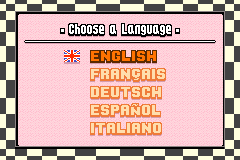
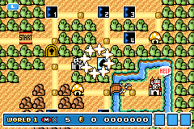
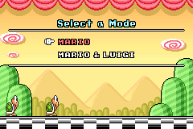

Super Mario Advance 4 - Super Mario Bros. 3 (Europe) (En,Fr,De,Es,It) (Rev 1)
Flash 1M Save Format Mapped (Family Spec) gbakit Built-In 💾 MultiBoot 🎮 4P Link 🔌 Game Boy Player Rumble (libgbp) 🔌 e-Reader Link
Cartridge Identity
- Game Code
AX4P(FamilyAX4)- Header Title
SUPER MARIOD- Maker / Revision
01/ rev1- ROM Size
- 8.0 MiB (8,388,608 B)
- Save Media
Flash 1M- SHA-256
f4bcac133e380eb5c1012bdd4c8ef997c0f653ba50be467c1645fb5c767fa50d- Engine / SDK Group
comm-001(196 families)
Screenshots

Niche & Rare Accessories
Detected niche/rare GBA accessory support: 🔌 Game Boy Player Rumble (libgbp) 🔌 e-Reader Link.
Full 343-ROM corpus breakdown in the Cartridge Hardware & Niche Accessories Reference · auto-detected from ROM bytes via
gbakit inspect.
- Game Boy Player Rumble (libgbp)
- SIO
0x04000120· ACK0x8002@0x0ab23c· official 18 KB GBP logo @0x1740b4 - e-Reader Link
- Game-side e-Reader Link / Card-e compatible title
Link Cable & Multiplayer Communications
This title contains detected communication capabilities: 💾 MultiBoot 🎮 4P Link.
Detailed protocol specifications, SIO registers, Joybus commands, and MultiBoot sequences are documented in the Link & Multiplayer Reference.
- Multi-Player SIO (4P)
- 16-bit ring network · SIOCNT (
0x04000128) literals:0x0ab02c,0x0ab2a0,0x0ab324· SIODATA32/SIOMULTI0 (0x04000120) literals:0x0ab214,0x0ab29c,0x0ab320 - Single-Cart MultiBoot
- Single-Cartridge MultiBoot (Download Play) client/server handler · Thumb SWI 0x25 (
0xDF25):0x0eb00e,0x11978c,0x24b78c,0x2bcdf0· ARM SWI 0x25 (0xEF000025):0x455d80
Battery Save Format Specification (Family Shared)
This release shares its save architecture with canonical family reference Super Mario Advance 4 - Super Mario Bros. 3 (Europe) (En,Fr,De,Es,It) (Family
AX4).
Open Family Save Format Spec (AX4P)Download save-format.json
- Canonical Specification
AX4P· 16 mapped fields · 3 verified checksum(s) · Confidence: MEDIUM- gbakit Built-In Support
- Built-in (AX4P)
gbakit save verify AX4P save.sav
gbakit save decode AX4P save.sav
gbakit save fix AX4P damaged.sav -o repaired.savLate-Game / Unlocked Battery Save
Synthesized clean-room with zero ROM patching and verified live in headless
libmgba.so.0.10 —
see the Late-Game Saves & Boundary Fuzzing Showcase.
- Late-Game Save
- Download
ax4p_lategame.sav(128 KiB) · gbakit verify OKsum16_le
Unlocked SMB3 World 1-8 progression flags, e-Reader record array, and maxed header state with verified sum16_le checksum.


Observed Battery Save Layout
- Fill Byte & Active Size
0x00fill · 55,045–131,072 / 131,072 B active (entropy 1.11 bits/B)- Active Offset Ranges
0x0–0x1FFFF(1 total)- ASCII Magic / Headers
SMA4MWP0,M3P0zl,ppPp,M3P0,S4CP- Observed Variable Regions
- 77,531 bytes across 163 spans:
0x0–0x18,0x1A,0x1C–0x77,0x7D–0x7F,0x81–0x94,0x96–0xA9,0xAB–0xBE,0xC0–0xD3, +12 more - Candidate Checksum/Counter Spans
0x1A,0x7D–0x7F,0x1001A,0x1007D–0x1007F- Integrity Check
- Confirmed at
0x1A
Asset Map (formatkit.asset-map.v1)
Download AX4E-r1-53ec98fc672d94e3.asset-map.json.gz (118,691 B (115.9 KiB)) Verified PASS · 48.06% coverage
| Metric | Bytes / Value | Entries |
|---|---|---|
| Identified | 1,890,519 B (1.80 MiB) (45.07%) | 1,141 |
| Mapped | 0 B (0.00%) | 0 |
| Opaque | 125,445 B (122.5 KiB) (2.99%) | 1 |
| Unknown | 2,178,340 B (2.08 MiB) (51.94%) | 978 |
| Total ROM Size | 4,194,304 B (4.00 MiB) | 2,120 |
| Coverage % | 48.06% | — |
| Entries w/ Code Refs | 1,121 / 2,120 (52.88%) | — |
Top Identified Formats: audio.ead-sma-sample (94 · 1,006,890 B (983.3 KiB)) · compress.bios-lz77 (311 · 715,967 B (699.2 KiB)) · gfx.gba-palette (726 · 71,712 B (70.0 KiB)) · compress.bios-huffman (8 · 59,754 B (58.4 KiB)) · rom.multiboot (1 · 36,004 B (35.2 KiB)) · gba.rom-header (1 · 192 B)
Largest unknown Extents (Headerless / Custom Asset Candidates)
| Offset | Size | Shannon Entropy | Code Refs |
|---|---|---|---|
0x002FC523 | 128,813 B (125.8 KiB) | 6.391 bits/B | 0 |
0x00290714 | 104,780 B (102.3 KiB) | 7.291 bits/B | 0 |
0x003C98A8 | 97,619 B (95.3 KiB) | 6.118 bits/B | 0 |
0x001AF5D4 | 96,992 B (94.7 KiB) | 3.780 bits/B | 0 |
0x001990B4 | 91,392 B (89.2 KiB) | 3.449 bits/B | 5 |
gzip -dk AX4E-r1-53ec98fc672d94e3.asset-map.json.gz && gbakit map verify rom.gba AX4E-r1-53ec98fc672d94e3.asset-map.json
gbakit assets export rom.gba --asset-map AX4E-r1-53ec98fc672d94e3.asset-map.json -o out/Text, Fonts & Scene Data
- Primary Text Encoding
- LZ77-compressed ASCII (
2ASCII strings ·1LZ77 ASCII blocks) - Font & VWF Indicators
- VWF Width Table 1bpp Font · BIOS SWIs: BitUnPack
0x10:12· LZ770x11/12:28· Huffman0x13:3· RLE0x14/15:2 - Scene & Packaging
69ROM pointer tables (≥32 entries,6≥200) ·7relativeu32TOCs ·156OAM metasprite hits
Hardware MMIO Subsystems
ppu_display0x80004bc,0x80e82bcsave_bus_sram_flash0x80eb060,0x80eb084,0x80eb2d8,0x80eb43c,0x80eb708
Regional Variants & Revisions (Family AX4)
- Super Mario Advance 4 - Super Mario 3 + Mario Brothers (Japan) (
AX4J, 4 MiB) - Super Mario Advance 4 - Super Mario 3 + Mario Brothers (Japan) (Rev 1) (
AX4J, 4 MiB) - Super Mario Advance 4 - Super Mario 3 + Mario Brothers (Japan) (Rev 2) (
AX4J, 4 MiB) - Super Mario Advance 4 - Super Mario 3 + Mario Brothers (Japan) (Rev 2) (Switch Online) (
AX4J, 8 MiB) - Super Mario Advance 4 - Super Mario 3 + Mario Brothers (Japan) (Rev 2) (Virtual Console) (
AX4J, 8 MiB) - Super Mario Advance 4 - Super Mario Bros. 3 (Europe) (En,Fr,De,Es,It) (
AX4P, 8 MiB) - Super Mario Advance 4 - Super Mario Bros. 3 (Europe) (En,Fr,De,Es,It) (Rev 1) (Switch Online) (
AX4P, 8 MiB) - Super Mario Advance 4 - Super Mario Bros. 3 (Europe) (En,Fr,De,Es,It) (Rev 1) (Virtual Console) (
AX4P, 8 MiB) - Super Mario Advance 4 - Super Mario Bros. 3 (USA) (
AX4E, 4 MiB) - Super Mario Advance 4 - Super Mario Bros. 3 (USA) (Rev 1) (Switch Online) (
AX4E, 8 MiB) - Super Mario Advance 4 - Super Mario Bros. 3 (USA) (Rev 1) (Virtual Console) (
AX4E, 8 MiB) - Super Mario Advance 4 - Super Mario Bros. 3 (USA, Australia) (Rev 1) (
AX4E, 4 MiB)